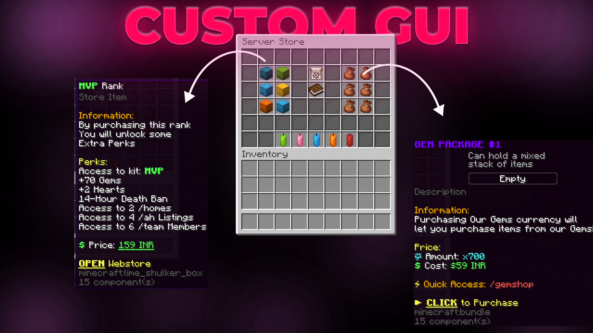
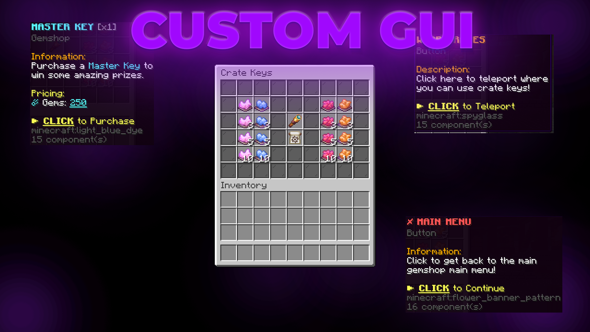
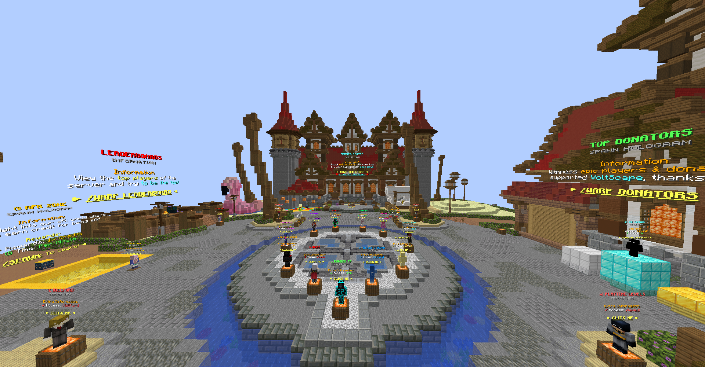
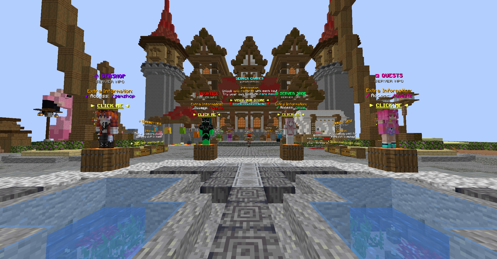
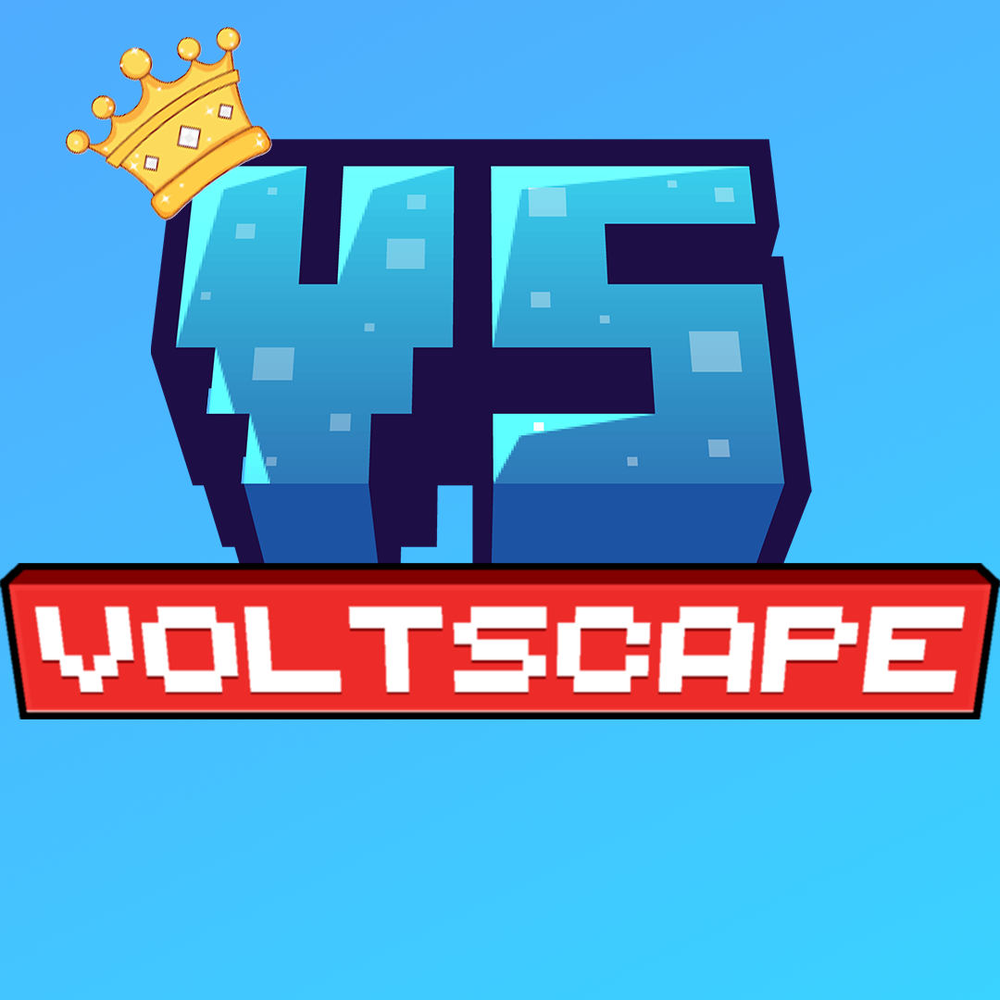

Building powerful, optimized Minecraft servers for communities
Custom GUI Designs
Explore my custom Minecraft server GUI designs. Click on any image to view in full size.
GUI Design 1
GUI Design 2

GUI Design 3

GUI Design 4
My Works
Check out some of my completed Minecraft server projects. Click on any image to view in full size.

Work 1
Work 2
Work 3

Work 4
Worked With

VoltscapeLifesteal
Also known as Voltcloud
A thrilling Lifesteal Minecraft server where every heart matters. Battle opponents, steal hearts, and become the most powerful player. Features custom gameplay mechanics, anti-cheat protection, and a growing community of competitive players.
Server IP
play.voltcloud.inCopied!
Professional Server Development
I provide comprehensive Minecraft server development services, from initial setup to advanced customization. Whether you're building a survival community, a competitive minigame network, or a custom RPG experience, I have the technical expertise to bring your vision to life. My servers are optimized for performance, security, and scalability to handle growing player bases.
Minecraft Server Setup
Complete server installation and configuration including Spigot, Paper, Bukkit, and custom modpack servers. I handle everything from initial deployment to network architecture.
Plugin Configuration
Expert setup and configuration of essential plugins including permissions, economy, protection, minigames, anti-cheat, and custom features tailored to your server's needs.
Performance Optimization
Advanced server optimization including lag reduction, TPS improvement, memory management, and chunk pre-generation for smooth gameplay even with high player counts.
Multiplayer Server Management
Complete server administration including player management, moderation tools, backup systems, DDoS protection, and 24/7 uptime solutions.
Advanced Server Customization
Custom world generation, unique gameplay mechanics, specialized plugins, custom items, and tailored experiences that make your server stand out from the competition.
Security & Protection
Comprehensive security measures including anti-grief systems, rollback capabilities, whitelist management, and protection against exploits and malicious attacks.
Why Choose My Server Services?
With years of experience in Minecraft server development, I understand what makes a server successful. I've built and managed servers that have hosted hundreds of concurrent players. My approach combines technical excellence with player-focused design, ensuring your server not only runs smoothly but also provides an engaging experience that keeps players coming back. From small private servers to large public networks, I deliver solutions that scale with your community.